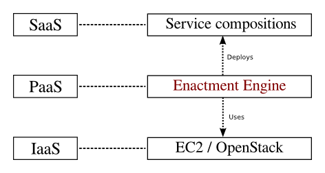

The deployment of large-scale service compositions presents several challenges, such as infrastructure failures, technological heterogeneity, distributions across different organizations, and continuous services updating. In this master thesis, we study how the automated deployed supported by middleware can help in overcoming such challenges. For this purpose, we developed the CHOReOS Enactment Engine, a middleware system that enables the distributed and automated deployment of web service compositions in a virtualized infrastructure, operating in the cloud computing model known as Platform as a Service. The developed middleware is evaluated qualitatively by comparing it with ad-hoc deployment solutions, and it is also evaluated quantitatively by its scalability regarding the deployment time of service compositions.
Software deployment, service compositions, choreographies, web services, cloud computing, large-scale.

Deploying large-scale service compositions on the cloud with the CHOReOS Enactment Engine Leonardo Leite, Carlos Eduardo Moreira, Daniel Cordeiro, Marco Aurélio Gerosa e Fabio Kon The 13th IEEE International Symposium on Network Computing and Applications 2014 (IEEE NCA14)
Paper download here (pdf).